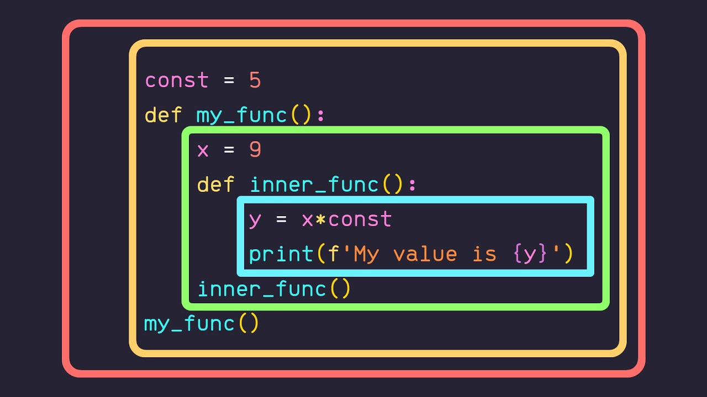

a function is just a "block" of code that you can name, and then call again later
they can be particularly useful for when we have a block of code that we want to execute routinely with small differences.
for example what if we had the following group of code
name = input("who are you? ")
print("hello ", name * 200)
but what if we wanted to change this 200 to be something else in the future?
we could group this into a function and call it over and over again!
def greet_a_lot(name, num)
print("hello ", name * num)
name = input("who are you? ")
for i in range(99999):
greet_a_lot(name, 999999999999999)
print(i)
scope just restricts access to certain variables

here is a code block that might help reinforce some of the concepts
GLOBAL_VAR = 10
def func1():
print(GLOBAL_VAR)
var1 = 5
print(var1)
def func2(arg1):
print(arg1)
print(GLOBAL_VAR)
if __name__ == "__main__":
func1()
func2()
print(arg1) # Throws an error, we don't have access
scope can be a little confusing at first so don't be afraid to ask questions
and talkas always, turn and chat with your neighbors, be friendly, work together and ask questions if you need, have a blast!